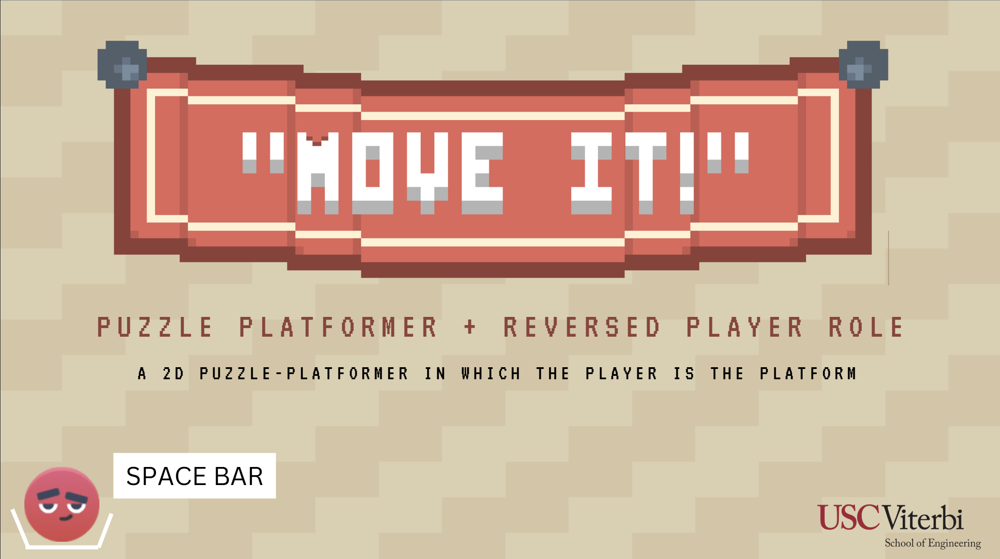
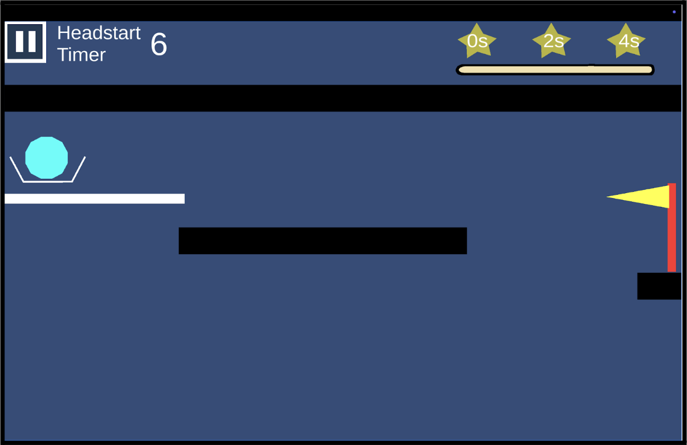
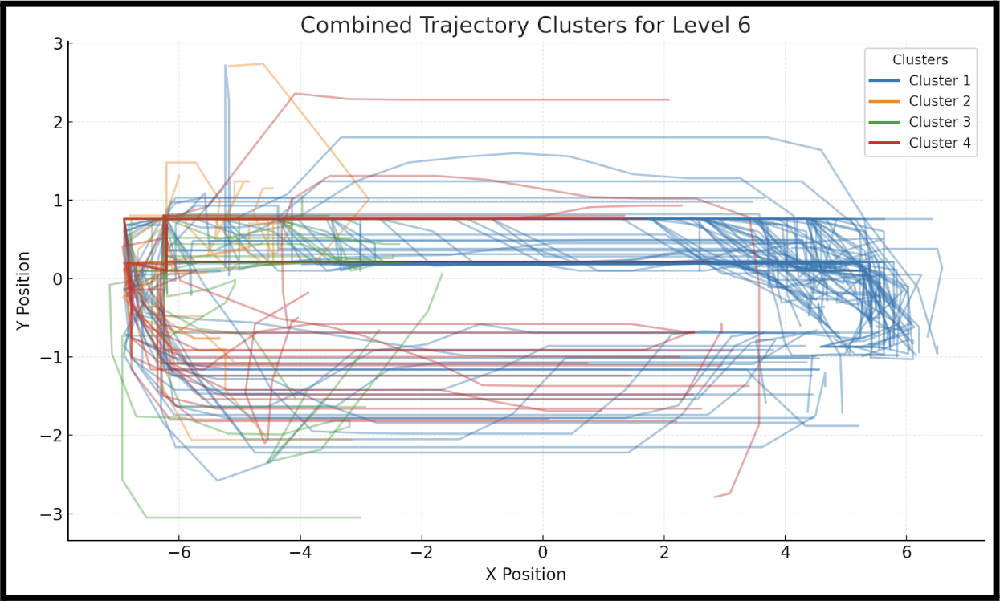
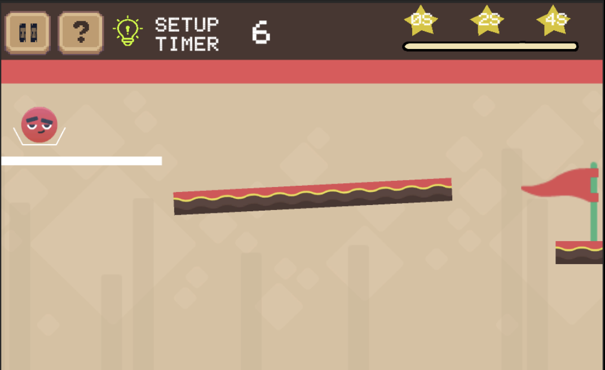
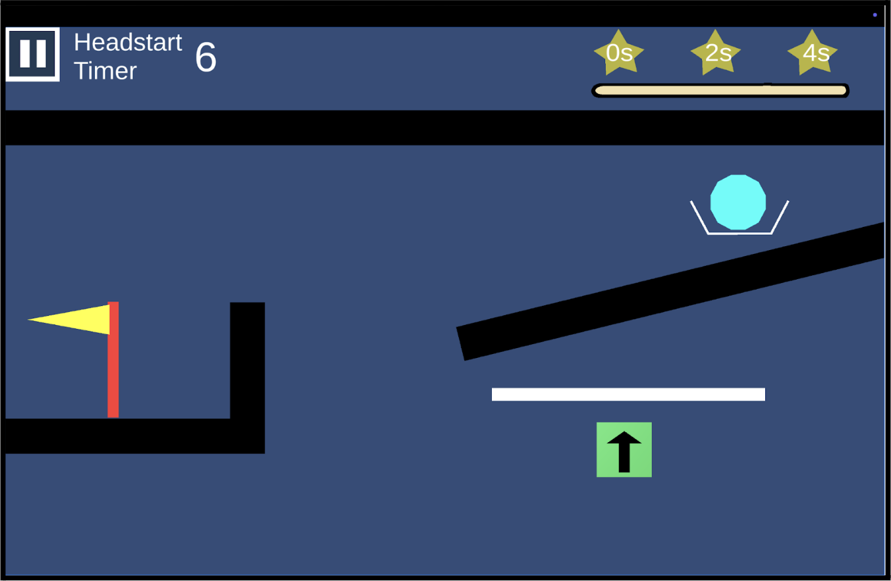
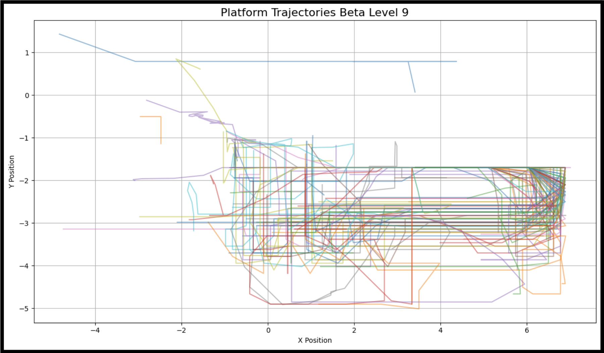
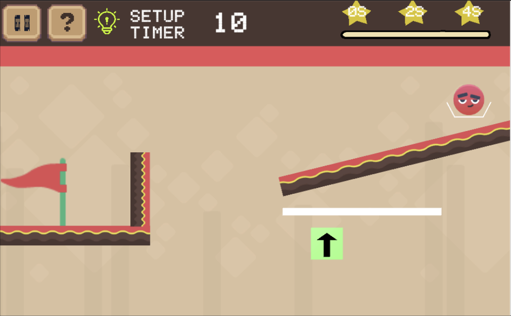
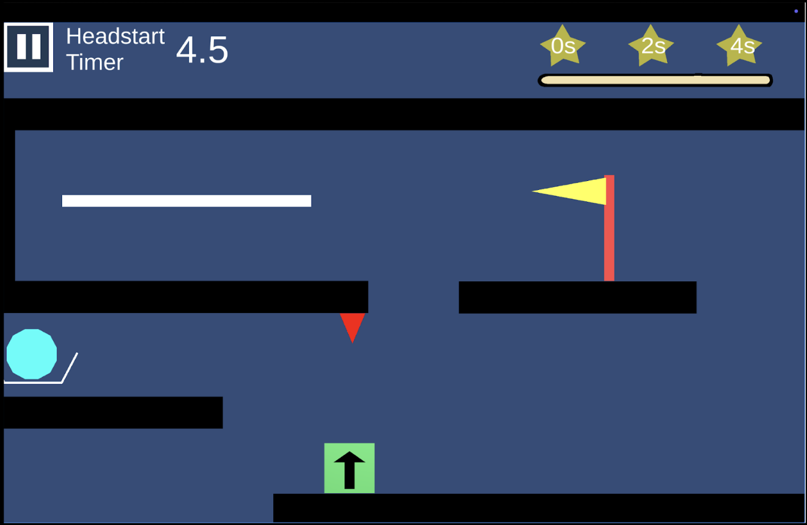
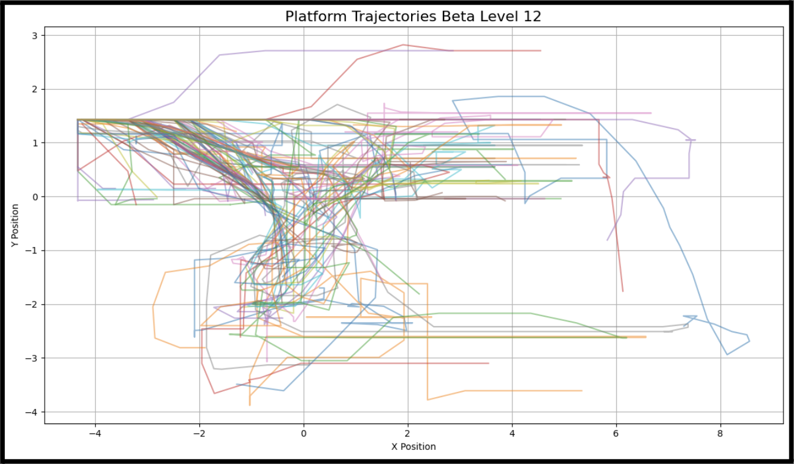
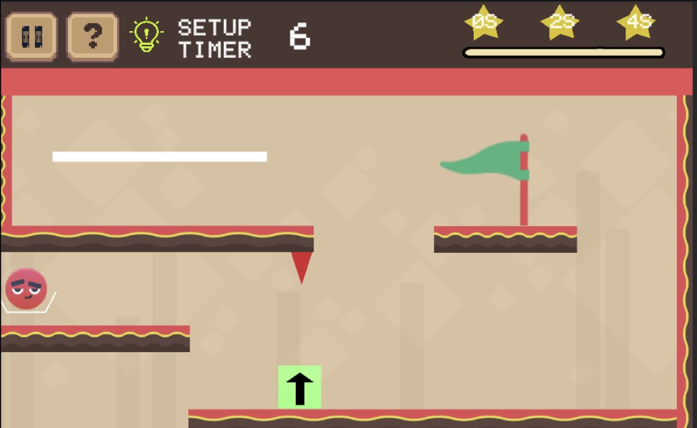

Move It!
“Move It!” is a timed 2D puzzle platformer where the player is the platform, guiding an object to goals through perilous terrain using both strategy and skill.

Overview
- Led my team to create a level pipeline and quick implementation of unique challenges for the player
- Created concept and core mechanics
- Designed and implemented 5 / 8 supporting mechanics
- Designed and implemented 36 / 44 levels
- Iterated on levels based on gathered player analytics
Level Iteration
-
The below section demonstrates my approach to level changes based on playtest data.
More information can be found near the end of our GDD.
Gallery








